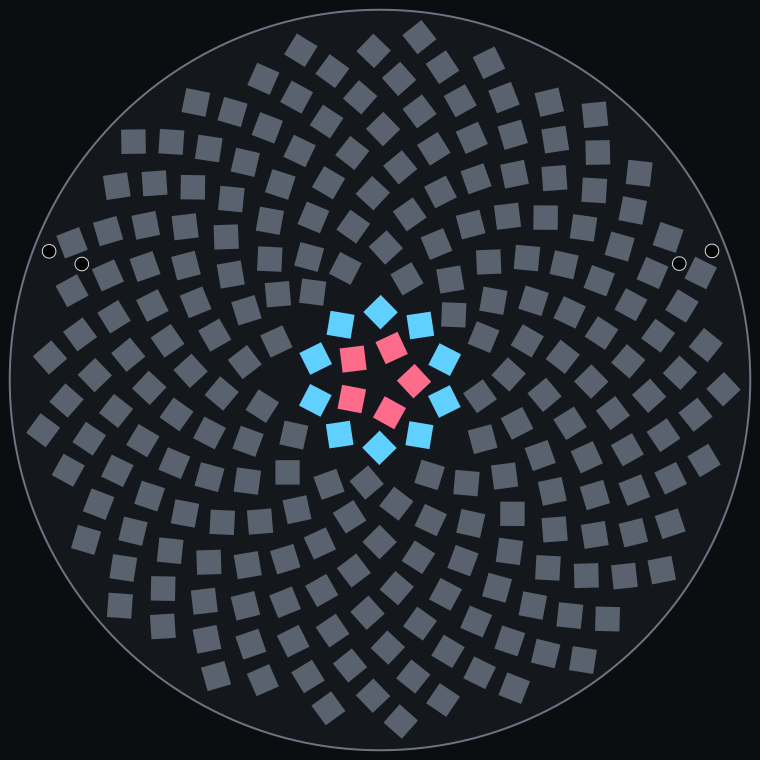
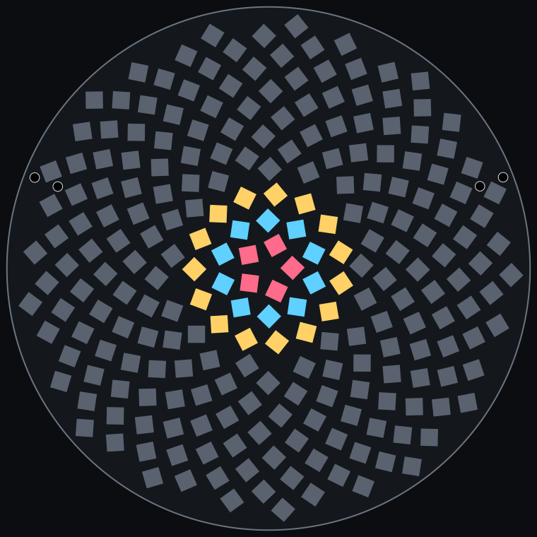
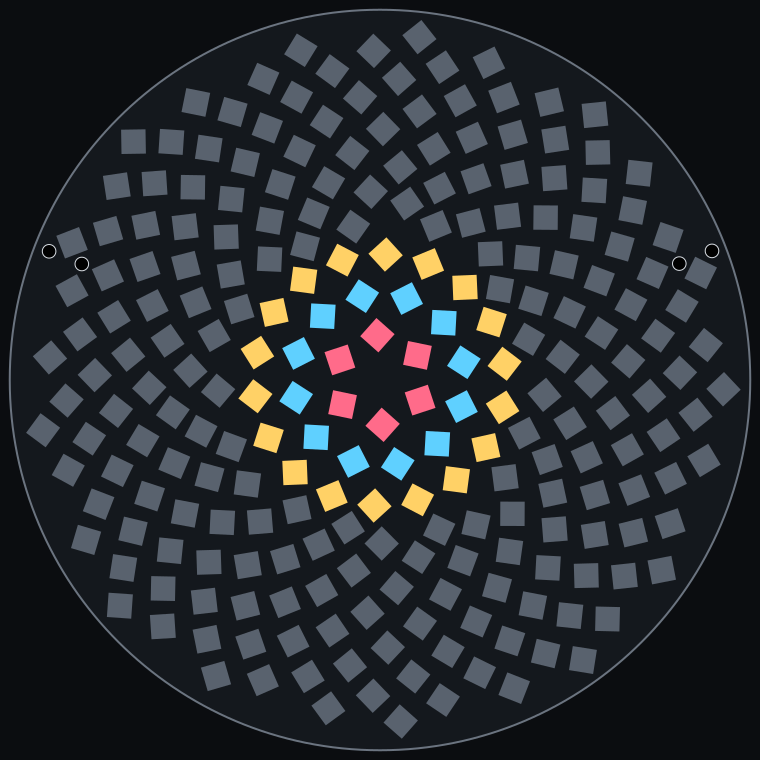
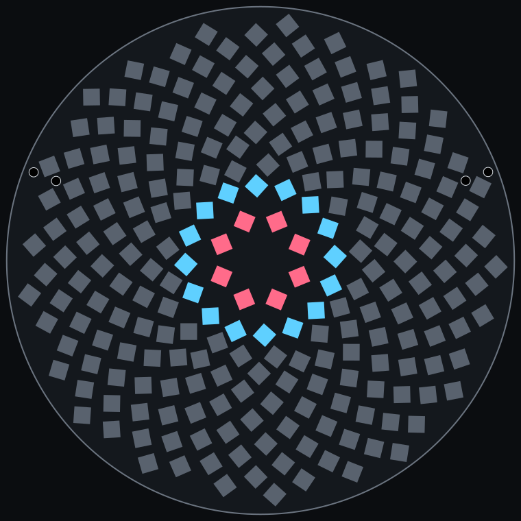
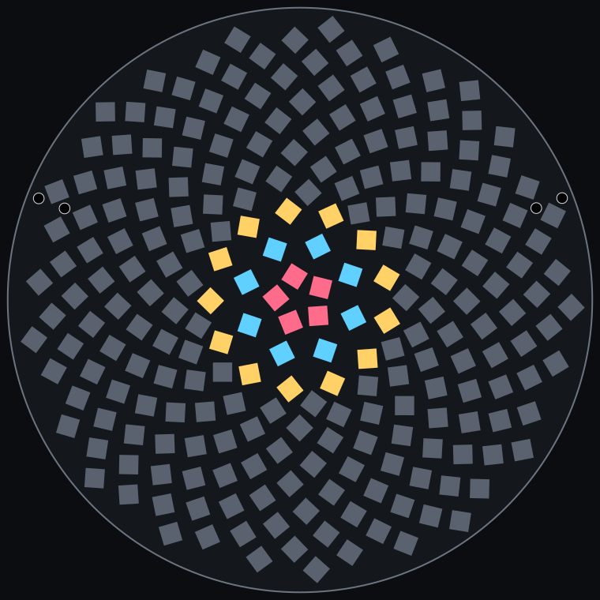

Symmetric centres for the sunflower
A study only: no board has changed. Coloured LEDs are the new rings; each plan shows the centre, then the whole board. Gaps come from a geometry model, and nothing has been routed.
| Plan | LEDs | Min pad gap, mm | Clear centre, mm | Exactly symmetric out to, mm radius | Sunflower LEDs eased | Largest move, mm |
|---|---|---|---|---|---|---|
| Now: plain sunflower | 234 | 0.36 | 1.1 | none | 0 | 0.00 |
| 5-fold, 5 + 10 | 234 | 0.41 | 1.7 | 3.5 | 9 | 0.69 |
| 5-fold, 5 + 10 + 15 | 234 | 0.42 | 1.7 | 5.4 | 11 | 0.49 |
| 6-fold, 6 + 12 + 18 | 234 | 0.41 | 2.8 | 6.4 | 28 | 0.93 |
| 8-fold, 8 + 16 | 234 | 0.30 | 4.5 | 5.6 | 33 | 1.14 |
| Fibonacci rings, 5 + 8 + 13 | 234 | 0.37 | 1.4 | none | 24 | 0.78 |


Tightest pad gap 0.36 mm, clear centre 1.1 mm.



Tightest pad gap 0.41 mm, clear centre 1.7 mm.



Tightest pad gap 0.42 mm, clear centre 1.7 mm.



Tightest pad gap 0.41 mm, clear centre 2.8 mm.



Tightest pad gap 0.30 mm, clear centre 4.5 mm.



Tightest pad gap 0.37 mm, clear centre 1.4 mm.